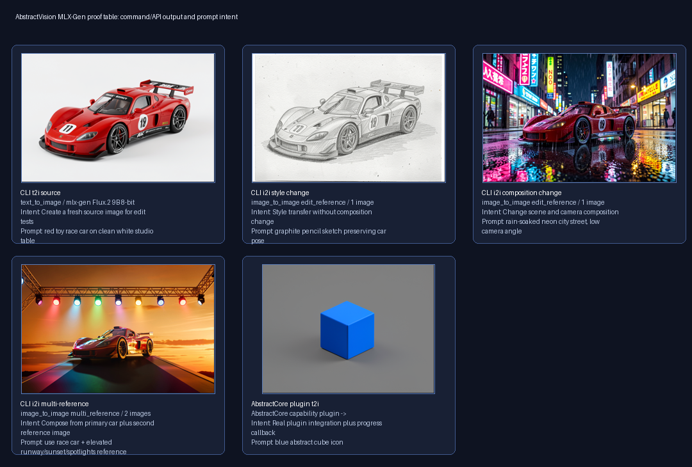
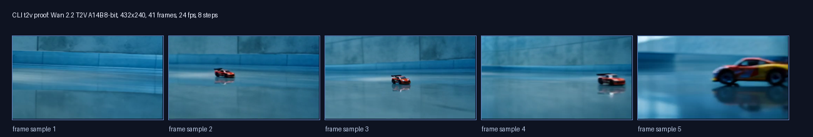

MLX-Gen local examples¶
This page shows local MLX-Gen image, edit, multi-reference edit, SeedVR2
upscale, AbstractCore plugin, and Wan A14B video outputs generated through
AbstractVision. The commands target the current MLX-Gen 0.18.13+ runtime with
cached or prepared model artifacts; the included proof manifests record the
runtime used for each artifact group.
MLX-Gen progress follows denoise steps. For video, the CLI percentage is
step / total_steps; frame counts are displayed only as context.
Setup¶
Install the MLX-Gen runtime extra and download the models used below:
pip install "abstractvision[mlx-gen]"
abstractvision download AbstractFramework/flux.2-klein-9b-8bit --provider mlx-gen
abstractvision download AbstractFramework/seedvr2-3b-8bit --provider mlx-gen
abstractvision download AbstractFramework/seedvr2-7b-8bit --provider mlx-gen
abstractvision download AbstractFramework/wan2.2-t2v-a14b-diffusers-8bit --provider mlx-gen
SeedVR2 upscaler selection:
| Model id | Use when |
|---|---|
AbstractFramework/seedvr2-3b-8bit |
Default q8 package. |
AbstractFramework/seedvr2-7b-8bit |
Higher-quality 7B package when memory allows. |
AbstractFramework/seedvr2-3b-4bit / AbstractFramework/seedvr2-7b-4bit |
Lower-memory packages. |
ByteDance-Seed/SeedVR2-3B / ByteDance-Seed/SeedVR2-7B |
Official source weights; use --quantize 8 or --quantize 4 only when runtime quantization is needed. |
Prepared local model folders can also be used directly. For the local folders from the MLX-Gen checkout:
abstractvision upscale \
--provider mlx-gen \
--model /Users/albou/projects/gh/sbx/mlx-gen/models/seedvr2-7b-8bit \
--image ./input.png \
--scale 2x \
--progress \
--open
Choose an asset store and input path names for the examples:
STORE_DIR=./mlx-gen-local-examples-store
SOURCE_IMAGE=./race-car-source.png
REFERENCE_IMAGE=./multi-reference-scene.png
UPSCALE_SOURCE=./race-car-source.png
The multi-reference input image used for the gallery is available here: multi_reference_scene.png.
{kind=link}
Commands¶
Create a source image for edit tests:
abstractvision t2i \
--provider mlx-gen \
--model AbstractFramework/flux.2-klein-9b-8bit \
--store-dir "$STORE_DIR" \
--width 768 \
--height 512 \
--steps 12 \
--seed 2401 \
--progress \
"red toy race car on clean white studio table"
Use the generated source image for a style-preserving edit:
abstractvision i2i \
--provider mlx-gen \
--model AbstractFramework/flux.2-klein-9b-8bit \
--store-dir "$STORE_DIR" \
--image "$SOURCE_IMAGE" \
--width 768 \
--height 512 \
--steps 12 \
--seed 2402 \
--progress \
"graphite pencil sketch preserving car pose"
Use the same source image for a stronger composition change:
abstractvision i2i \
--provider mlx-gen \
--model AbstractFramework/flux.2-klein-9b-8bit \
--store-dir "$STORE_DIR" \
--image "$SOURCE_IMAGE" \
--width 768 \
--height 512 \
--steps 12 \
--seed 2403 \
--progress \
"rain-soaked neon city street, low camera angle"
Use a second reference image for multi-reference composition:
abstractvision i2i \
--provider mlx-gen \
--model AbstractFramework/flux.2-klein-9b-8bit \
--store-dir "$STORE_DIR" \
--image "$SOURCE_IMAGE" \
--reference-image "$REFERENCE_IMAGE" \
--width 768 \
--height 512 \
--steps 12 \
--seed 2404 \
--progress \
"use race car + elevated runway/sunset/spotlights reference"
Upscale the source image with SeedVR2. The default package is
AbstractFramework/seedvr2-3b-8bit; use
AbstractFramework/seedvr2-7b-8bit when memory allows, or the matching q4
package when memory is tight. Pass either a scale factor such as 2x or a
shortest-edge target resolution.
abstractvision catalog --provider mlx-gen --task upscale
abstractvision upscale \
--provider mlx-gen \
--model AbstractFramework/seedvr2-3b-8bit \
--store-dir "$STORE_DIR" \
--image "$UPSCALE_SOURCE" \
--scale 2x \
--seed 2405 \
--open
abstractvision upscale \
--provider mlx-gen \
--model AbstractFramework/seedvr2-7b-8bit \
--store-dir "$STORE_DIR" \
--image "$UPSCALE_SOURCE" \
--resolution 1024 \
--seed 2405
Generate a low-cost Wan A14B video check at 432x240, 41 frames, and 8
denoise steps:
abstractvision t2v \
--provider mlx-gen \
--model AbstractFramework/wan2.2-t2v-a14b-diffusers-8bit \
--store-dir "$STORE_DIR" \
--width 432 \
--height 240 \
--num-frames 41 \
--fps 24 \
--steps 8 \
--guidance-scale 4.0 \
--guidance-2 3.0 \
--seed 2406 \
--progress \
"A small red toy race car rolls forward on a glossy studio floor, camera locked, soft reflections, smooth motion"
Outputs¶
The generated gallery below is bundled with the docs. The complete manifest is
available as summary.json, and
the AbstractCore plugin progress event capture is available as
abstractcore_plugin_t2i_progress_events.json.
The SeedVR2 upscaler proof was run separately against MLX-Gen 0.18.13; its
manifest is seedvr2_upscale_proof.json.

| Output | Prompt or intent | Result |
|---|---|---|
| Text to image | red toy race car on clean white studio table |
 |
| Image edit, style | graphite pencil sketch preserving car pose |
 |
| Image edit, composition | rain-soaked neon city street, low camera angle |
 |
| Multi-reference edit | use race car + elevated runway/sunset/spotlights reference |
 |
| SeedVR2 upscale | seedvr2-7b-8bit, scale=2x, local prepared folder |


|
| SeedVR2 upscale, q4 and Core | seedvr2-7b-4bit CLI proof plus Core /v1/images/upscale q8 route proof |


|
| AbstractCore plugin T2I | blue abstract cube icon with on_progress(event) capture |
 |
Video output¶
The A14B example is the real generated MP4. The contact sheet shows sampled frames for quick inspection in static contexts.
